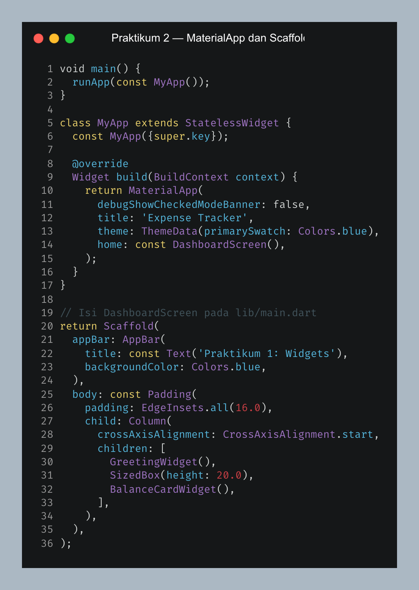
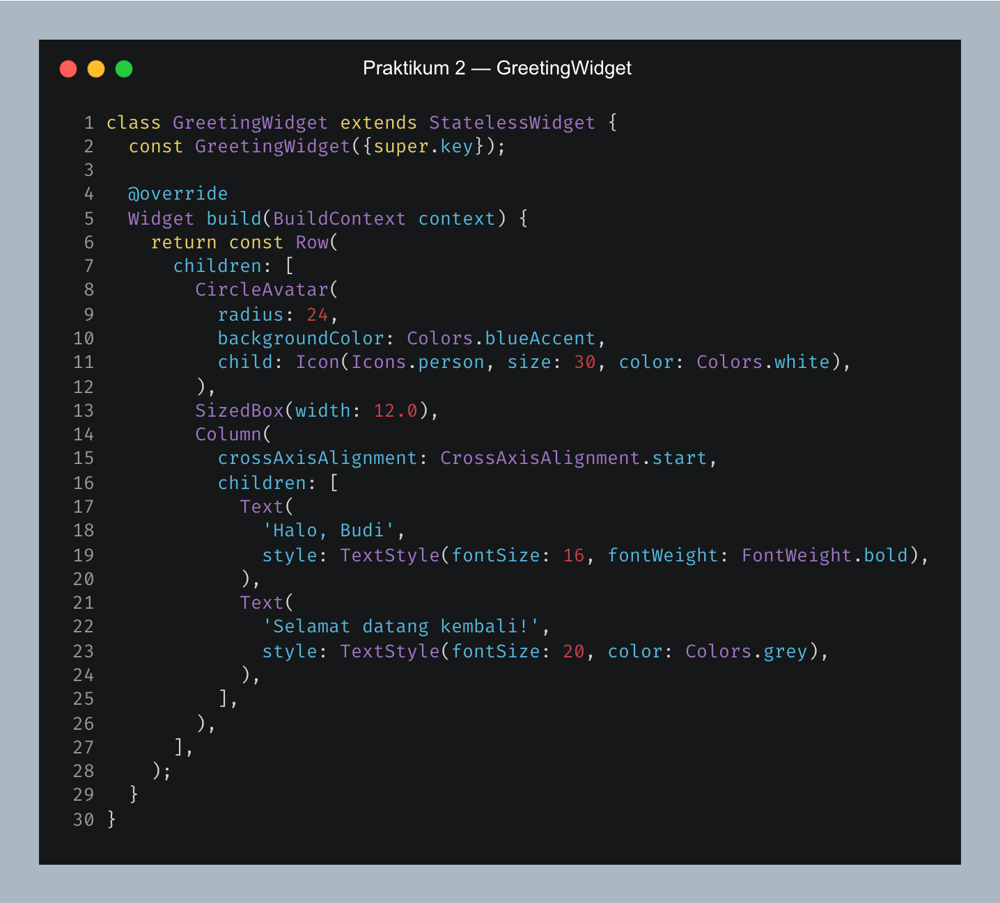
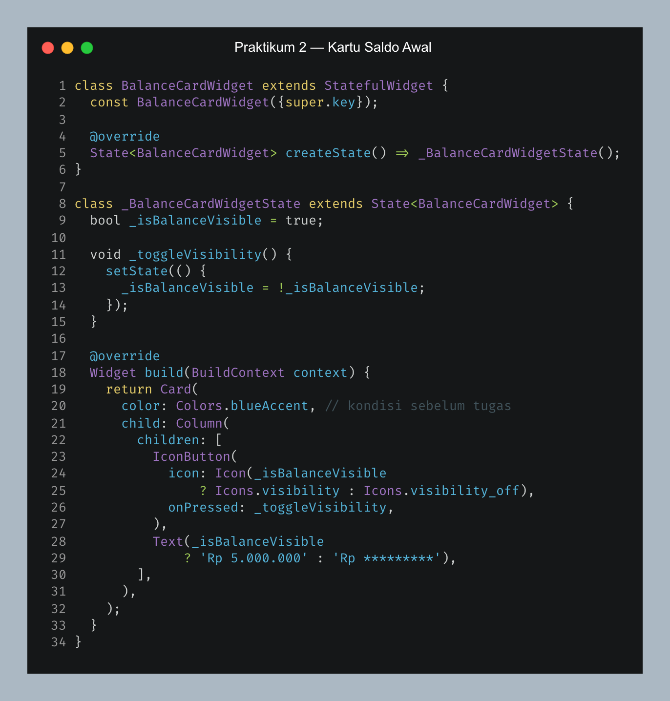
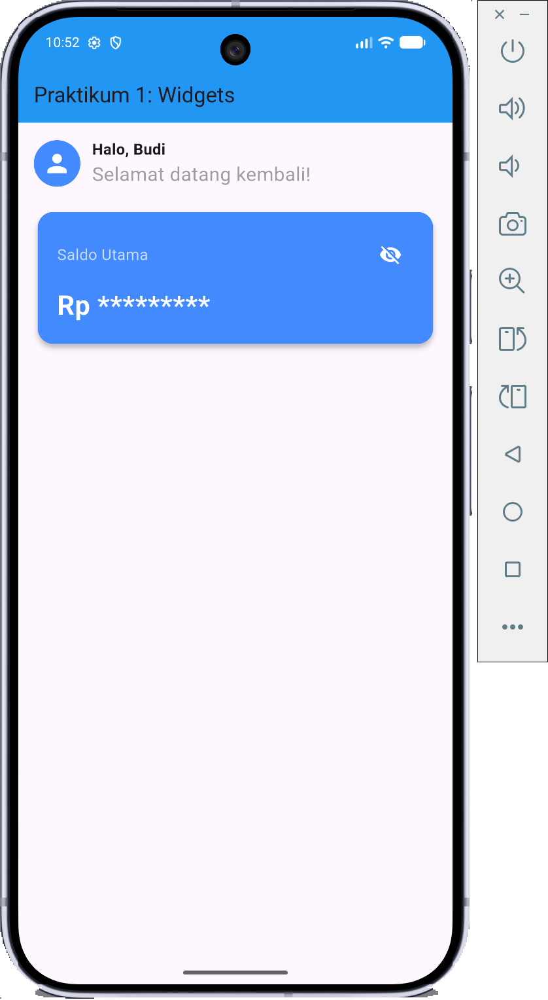
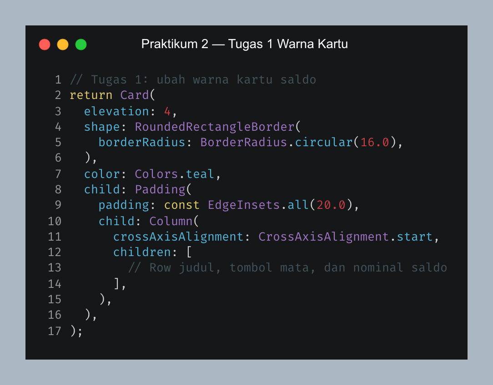
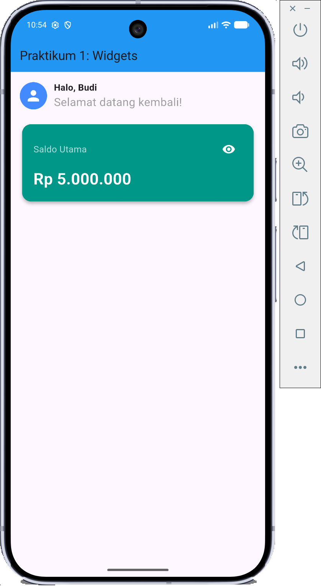
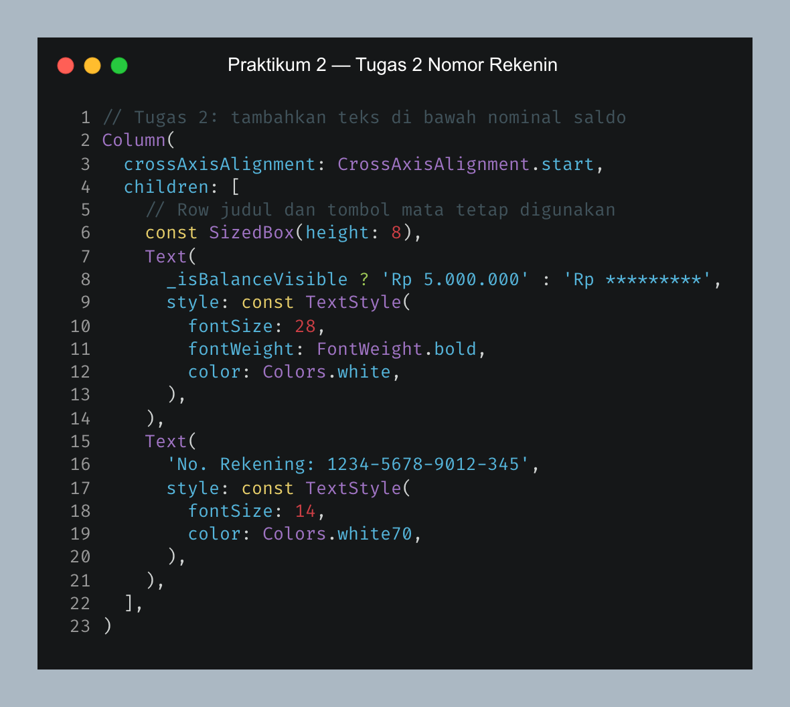

1.1 Tujuan
- Memahami struktur dasar aplikasi Flutter melalui
MaterialAppdanScaffold. - Membedakan
StatelessWidgetdanStatefulWidget. - Menggunakan
setState()agar tampilan saldo berubah saat tombol mata ditekan.
1.2 Alat
- Flutter SDK dan Dart SDK.
- Visual Studio Code.
- Android Emulator untuk menguji tampilan dan interaksi.
1.3 Dasar Teori
StatelessWidget
Widget yang tidak menyimpan state yang berubah selama aplikasi berjalan. GreetingWidget menampilkan avatar, nama, dan teks sapaan.
StatefulWidget dan setState()
BalanceCardWidget menyimpan nilai _isBalanceVisible. Saat tombol mata ditekan, setState() mengubah nilainya dan Flutter menggambar ulang kartu saldo.
1.4 Langkah-Langkah dan Implementasi
A. Menyiapkan halaman utama
Aplikasi dimulai dari main() yang memanggil MyApp. MaterialApp menentukan halaman awal, sementara Scaffold menyediakan AppBar dan area isi. Di dalam Column, sapaan diletakkan di atas kartu saldo.

Gambar 1. Kode halaman utama dan urutan widget
B. Membuat sapaan dengan StatelessWidget
GreetingWidget tidak perlu menyimpan data yang berubah. Widget ini memakai Row untuk menempatkan avatar di samping Column yang berisi nama dan teks sapaan.

Gambar 2. Kode sapaan statis
C. Membuat kartu saldo yang interaktif
BalanceCardWidget menyimpan nilai _isBalanceVisible. Ketukan pada IconButton memanggil _toggleVisibility(). Di dalam fungsi itu, setState() membalik nilai boolean dan membuat tampilan nominal serta ikon mata diperbarui.

Gambar 3. Kode perubahan state kartu saldo
D. Menguji hasil awal
Sebelum tugas dikerjakan, kartu masih biru dan belum mempunyai teks nomor rekening. Pengujian tombol mata memperlihatkan dua keadaan saldo berikut.
Gambar 4. Saldo terlihat pada kartu biru

Gambar 5. Saldo disensor setelah tombol mata ditekan
1.5 Latihan / Tugas
Tugas 1 — Mengubah warna kartu saldo
Pada BalanceCardWidget, properti color milik Card diganti dari Colors.blueAccent menjadi Colors.teal. Perubahan ini hanya memengaruhi latar kartu; logika tombol mata tetap sama.

Gambar 6. Kode tugas 1: warna kartu teal

Gambar 7. Hasil tugas 1: kartu saldo teal
Tugas 2 — Menambahkan nomor rekening
Sebuah Text ditambahkan setelah widget nominal di dalam Column kartu saldo. Karena nomor rekening tidak berubah saat tombol mata ditekan, teks ini tetap tampil ketika nominal disensor.

Gambar 8. Kode tugas 2: teks nomor rekening
Gambar 9. Hasil tugas 2: nomor rekening di bawah saldo
1.6 Analisis Hasil Pengujian
| Pengujian | Tindakan | Hasil |
|---|---|---|
| Saldo terlihat | Buka dashboard | Nominal Rp 5.000.000 terlihat. |
| Saldo disensor | Tekan ikon mata | Nominal berubah menjadi tanda bintang. |
| Warna kartu | Jalankan kode setelah tugas 1 | Kartu tampil teal. |
| Nomor rekening | Jalankan kode setelah tugas 2 | Teks rekening tampil di bawah saldo. |
1.7 Kesimpulan
Praktikum menerapkan StatelessWidget untuk sapaan dan StatefulWidget untuk kartu saldo. setState() mengubah tampilan nominal; hasil tugas menunjukkan perubahan warna kartu dan penambahan nomor rekening.